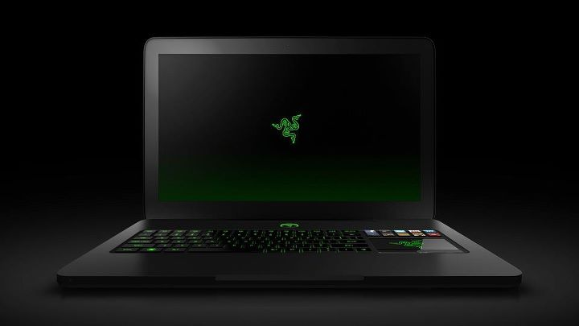
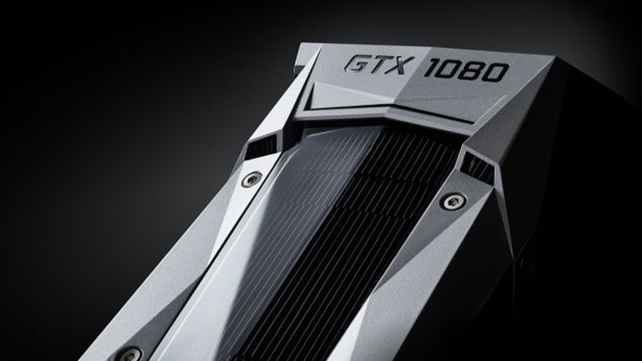
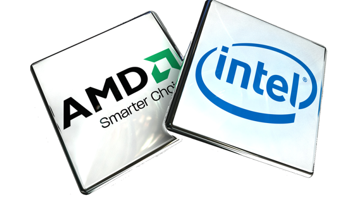
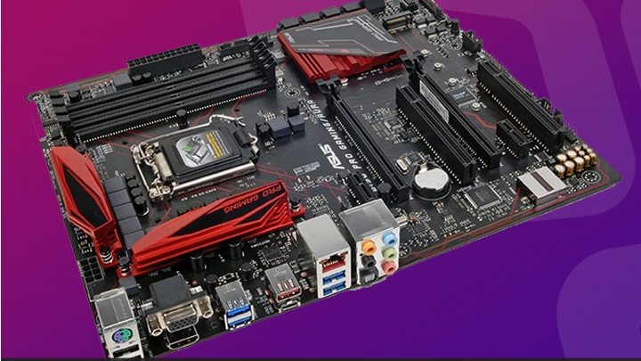
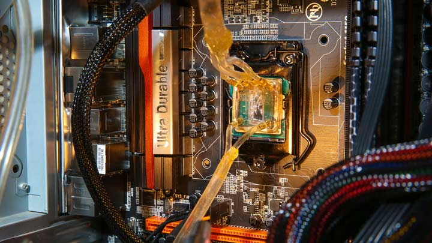
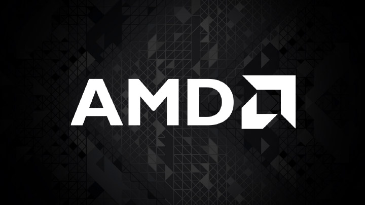

Informática
Quero comprar um PC novo [versão 2016]
A missão da Tendência Informática é descomplicar o mundo da informática, por isso a gente sempre elabora artigos com dicas rápidas para você que quer ficar sempre atualizado. A gente sabe que montar um PC não é tarefa simples para todos, mas muita gente já põe a mão na massa e gosta de fazer as coisas do seu jeito. Só que escolher os componentes pode ser um pouco mais chato.
Review: placa de vídeo NVIDIA GeForce GTX 1080
Depois de tantos rumores, a nova geração de placas da NVIDIA finalmente foi lançada. Equipada com a nova — e inédita — arquitetura Pascal, a série GTX 1000 visa entregar um nível de desempenho absurdo em aplicações com realidade virtual e resolução 4K. A nova família de placas da NVIDIA é protagonizada pela monstruosa GeForce GTX 1080, modelo que vem preparado para substituir a tão aclamada GTX 980.
Curiosidades sobre a AMD e a Intel
Quem vê empresas como Intel e AMD em suas posições de destaque no mercado de hardware não faz ideia do que elas já passaram ao longo de seus quase cinquenta anos de existência. Elas já foram bem menores, batalharam no mercado de hardware, desenvolveram diferentes tecnologias, deram tiros para todos os lados e lutaram várias vezes para ver quem ficava no topo.
Review: placa-mãe ASUS 970
Não é de hoje que a ASUS é sinônimo de qualidade em hardware. A empresa é muito prestigiada pelos consumidores, mas certamente ganha um lugar especial no coração dos jogadores que sempre buscam o melhor em placas-mãe. Vem com um chipset mais modesto, mas isso não quer dizer que ela não esteja preparada para entregar alta performance.
Coisas que você pode fazer no Win10

Com a chegada do Windows 10, uma série de novidades pode ser experimentada pelos consumidores. Você já deve ter visto uma série de matérias que apresentam as novidades que se tornaram possíveis graças ao novo sistema operacional da Microsoft. Mas será que você saberia dizer tudo o que os usuários podem fazer agora e que não podiam fazer com o Windows 8?
Como remover propagandas e adwares
Instalar extensões no navegador é algo interessante, porém é preciso tomar muito cuidado ao selecionar o que você deseja usar. Muitos plugins são, na verdade, adwares disfarçados de complementos, que não possuem muita utilidade e enchem o seu navegador de propagandas desnecessárias. Muitas vezes, esses adwares são ativados na hora em que você está instalando um programa, se você não prestar atenção.
Manutenção de PCs
A revolução tecnológica ocorrida nos últimos anos tornou a informática acessível praticamente para qualquer pessoa. Atualmente, está muito fácil aprender sobre computadores, principalmente pelo preço reduzido das máquinas e pela existência de diversos cursos de informática muito baratos. Consequentemente, cada vez mais pessoas estão aprendendo a montar e configurar os próprios PCs.
Radeon 400 é anunciada pela AMD
A AMD publicou em seu site as especificações técnicas da série de GPUs Radeon 400. Como destaques das variações do Radeon R9 e Radeon R7 estão a alta performance e o baixo consumo de energia. Integram os lançamentos, ainda, chips baseados na microarquitetura Polaris. Ao todo, mais de 10 SKUs baseadas em diferentes configurações de GPU fazem parte da série.